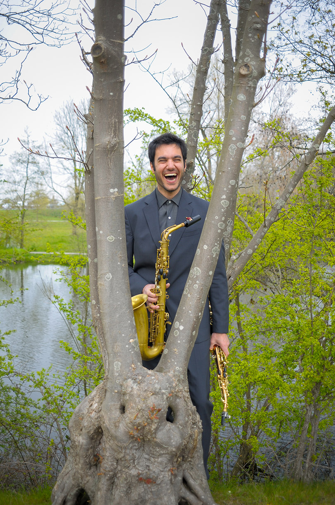

Bio
Pantelis Lykoudis is a saxophonist, educator and improviser from Athens, Greece. He was introduced to music through the Orff approach, while at 7 he picked up saxophone. After receiving his diploma in Greece, he pursued further studies at HKU Utrechts Conservatorium with Johan van der Linden and Kunstuni Graz with Gerald Preinfalk. Additionally, he holds a master's degree from UMass Amherst, where he studied with Jonathan Hulting-Cohen. He has participated in masterclasses of Marcus Weiss and Frederick Hemke, among others, while he has received the 3rd prize in the Panhellenic Saxophone Competition (2015) and the Lynn Klock Award in Saxophone (2024).
Pantelis has taught at the International School Utrecht (the Netherlands) and UMass Amherst (United States), among others. Further, he has performed at the International Computer Music Conference (South Korea), Midwest Graduate Music Consortium (United States), Darmstädter Ferienkurse (Germany), Sax Only Antwerpen (Belgium) and the World Saxophone Congress (Croatia), while he has presented workshops and lectures at the Xenakis Centenary International Symposium (Greece) and Festival Internacional de Saxofone de Palmela (Portugal).
View full CV